Canvas
Canvas API on MDNWhat is it used for?
drawing graphics
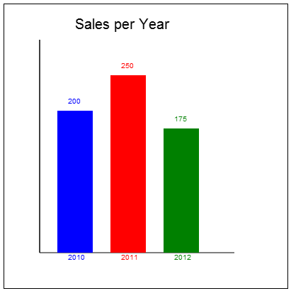animation

game graphics

data visualization
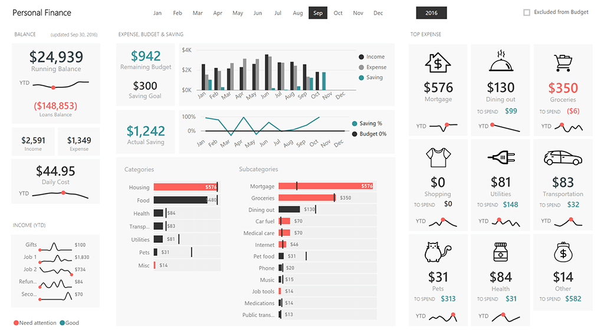photo manipulation
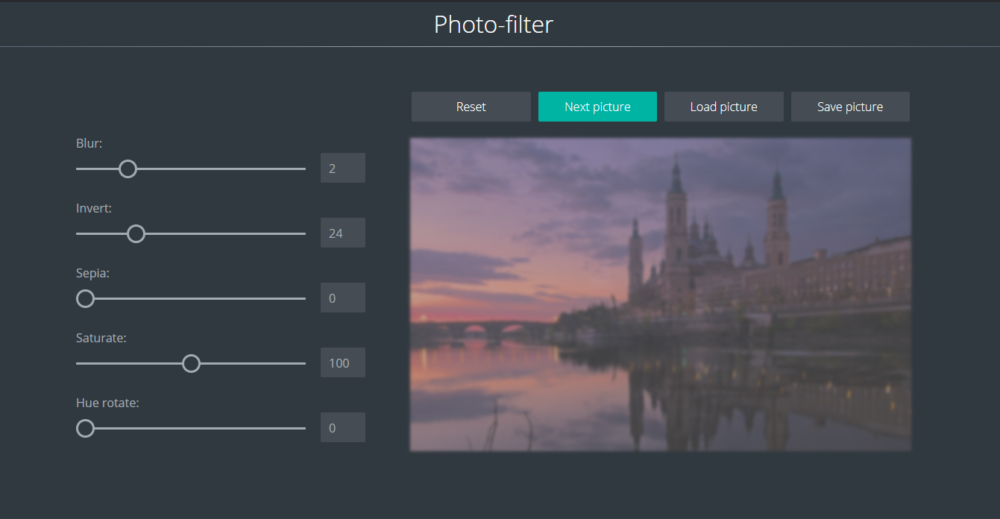real-time video processing
When is it used?
What can we use else
Document Object Model (DOM)
Pros: ease-of-use
Cons: inefficiency in terms of memory and rendering speed
Scalable Vector Graphics (SVG)
Pros: good for high-fidelity, large graphics
Cons: bad to work with many graphics
HTML5 canvas
Pros: fast and flexible, hardware acceleration, better than SVG for complex graphics
Cons: less abstraction
How to use?
Create CanvasElement in HTML
and then use it in JavaScript
const canvas = document.getElementById('canvas');
Properties
width
height

Methods
getContext(contextType, contextAttributes)
toDataURL(type, encoderOptions)
toBlob(callback, mimeType, qualityArgument)
captureStream(frameRate)
transferControlToOffscreen()
Context
const ctx = canvas.getContext('2d');
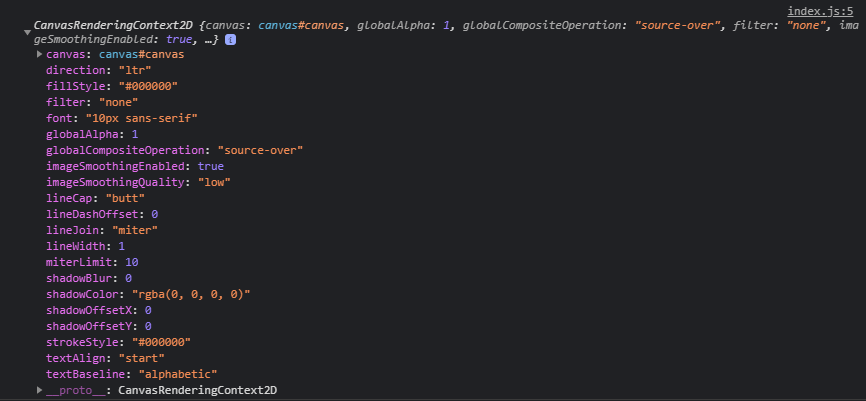
Drawing shapes with canvas
rectangles
function draw() {
ctx.fillRect(25, 25, 100, 100);
ctx.clearRect(45, 45, 60, 60);
ctx.strokeRect(50, 50, 50, 50);
}
paths, lines and movings
function draw() {
ctx.beginPath();
ctx.moveTo(0, 50);
ctx.lineTo(50, 0);
ctx.lineTo(100, 50);
ctx.closePath();
ctx.stroke();
}
arcs
function draw() {
ctx.arc(70, 70, 50, 0, Math.PI * 2);
ctx.stroke();
}
function draw() {
ctx.beginPath();
ctx.moveTo(200, 20);
ctx.arcTo(200, 130, 50, 20, 10);
ctx.stroke();
}
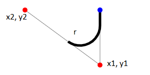
bezier and quadratic curves
ctx.quadraticCurveTo(25, 25, 25, 62.5);
ctx.bezierCurveTo(75, 37, 70, 25, 50, 25);
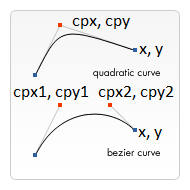
Path2D objects
const rectangle = new Path2D();
rectangle.rect(10, 10, 50, 50);
const circle = new Path2D();
circle.arc(100, 35, 25, 0, 2 * Math.PI);
ctx.stroke(rectangle);
ctx.fill(circle);
const p = new Path2D('M10 10 h 80 v 80 h -80 Z');
styles and colors
Colors
ctx.fillStyle = 'orange';
ctx.fillStyle = '#FFA500';
ctx.fillStyle = 'rgb(255, 165, 0)';
ctx.fillStyle = 'rgba(255, 165, 0, 1)';
ctx.strokeStyle = 'orange';
ctx.strokeStyle = '#FFA500';
ctx.strokeStyle = 'rgb(255, 165, 0)';
ctx.strokeStyle = 'rgba(255, 165, 0, 1)';
gradient and patterns
const lineargradient = ctx.createLinearGradient(0, 0, 150, 150);
lineargradient.addColorStop(0, 'white');
lineargradient.addColorStop(1, 'black');
ctx.fillStyle = lineargradient;
const img = new Image();
img.src = 'someimage.png';
const pattern = ctx.createPattern(img, 'repeat');
ctx.fillStyle = pattern;
Transparency
ctx.globalAlpha = 1; // default
Line styles
ctx.lineWidth = 1; // default
ctx.lineCap = "butt" || "round" || "square"; // butt is default

ctx.lineJoin = "round" || "bevel" || "miter"; // miter is default

ctx.miterLimit = 1; // 10 is default

ctx.setLineDash([]);
ctx.setLineDash([1, 1]);
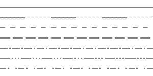
ctx.lineDashOffset = 4; // default is 0.0
Shadows
ctx.shadowOffsetX = 0; // default value
ctx.shadowOffsetY = 0; // default value
ctx.shadowBlur = 0; // default value
ctx.shadowColor = 'black'; // default value
Drawing text
ctx.font = '10px sans-serif';
ctx.textAlign = 'start'; // default
ctx.textAlign = 'end';
ctx.textAlign = 'left';
ctx.textAlign = 'center';
ctx.textAlign = 'right';
ctx.textBaseline = 'top';
ctx.textBaseline = 'hanging';
ctx.textBaseline = 'middle';
ctx.textBaseline = 'alphabetic'; // default
ctx.textBaseline = 'ideographic';
ctx.textBaseline = 'bottom';
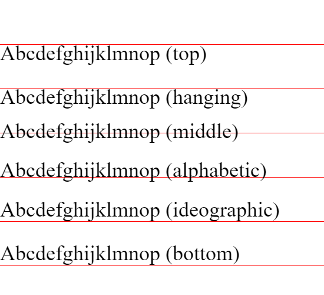
ctx.direction = 'ltr';
ctx.direction = 'rtl';
ctx.direction = 'inherit'; // default
function draw() {
ctx.font = '40px serif';
ctx.fillText('Hello world', 10, 50);
ctx.strokeText('Hello world', 10, 50);
}
Using images
Drawing images
function draw() {
ctx.drawImage(image, dx, dy);
ctx.drawImage(image, dx, dy, dWidth, dHeight);
ctx.drawImage(image, sx, sy, sWidth, sHeight,
dx, dy, dWidth, dHeight);
}

ctx.imageSmoothingEnabled = false; // default true
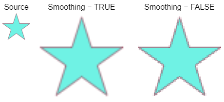
Transformations
Saving and restoring state
function draw() {
ctx.save();
ctx.fillStyle = '#09F';
ctx.restore();
}
Translating
function draw() {
ctx.save();
ctx.translate(x, y);
ctx.fillRect(0, 0, 25, 25);
ctx.restore();
}

Rotating
function draw() {
ctx.save();
ctx.rotate((Math.PI / 180) * 25);
ctx.fillRect(0, 0, 25, 25);
ctx.restore();
}

Scaling
function draw() {
ctx.save();
ctx.scale(9, 3);
ctx.fillRect(0, 0, 25, 25);
ctx.restore();
}
Transforms
function draw() {
ctx.transform(1, .2, .8, 1, 0, 0);
ctx.fillRect(0, 0, 25, 25);
}
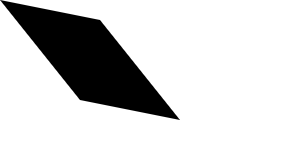
Compositing and clipping
ctx.globalCompositeOperation = 'source-over'; // default
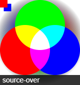
Clipping paths
function draw() {
const path = new Path2D();
path.arc(150, 75, 50, 0, Math.PI * 2);
ctx.clip(path);
ctx.fillRect(0, 0, 300, 150);
}

animations
Steps you need to take to draw a frame
- Clear the canvas
- Save the canvas state
- Draw animated shapes
- Restore the canvas state
Scheduled updates
- setInterval(function, delay)
- setTimeout(function, delay)
- requestAnimationFrame(callback)

Simple example
const canvas = document.getElementById('canvas');
canvas.width = 800;
canvas.height = 500;
const ctx = canvas.getContext('2d');
let raf;
const ball = {
x: 100,
y: 100,
vx: 5,
vy: 2,
radius: 25,
color: 'blue',
draw: function() {
ctx.beginPath();
ctx.arc(this.x, this.y, this.radius, 0, Math.PI * 2, true);
ctx.closePath();
ctx.fillStyle = this.color;
ctx.fill();
}
}
function draw() {
ctx.clearRect(0, 0, canvas.width, canvas.height);
ball.draw();
if (ball.y + ball.vy > canvas.height ||
ball.y + ball.vy < 0) {
ball.vy = -ball.vy;
}
if (ball.x + ball.vx > canvas.width ||
ball.x + ball.vx < 0) {
ball.vx = -ball.vx;
}
ball.x += ball.vx;
ball.y += ball.vy;
raf = requestAnimationFrame(draw)
}
raf = requestAnimationFrame(draw)
Pixel manipulation
Getting and putting the pixel data
ctx.fillStyle = 'red';
ctx.fillRect(0, 0, canvas.width, canvas.height);
const image = ctx.getImageData(0, 0, canvas.width, canvas.height);
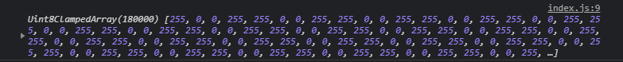
for (let i = 0; i < image.data.length; i += 4) {
image.data[i] = 100;
image.data[i + 1] = 125;
image.data[i + 2] = 255;
image.data[i + 3] = 100;
}
ctx.putImageData(image, 0, 0);
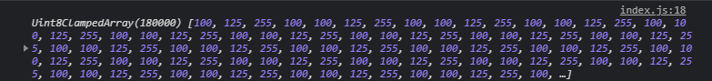
Saving images
const data = canvas.toDataURL();
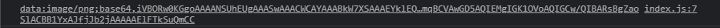
canvas.toBlob((blob) => {
const newImage = document.createElement('img');
const url = URL.createObjectURL(blob);
newImage.onload = () => {
URL.revokeObjectURL(url);
}
newImage.src = url;
document.body.appendChild(newImage);
}, 'image/png', 1);
const ctx = canvas.getContext('webgl');
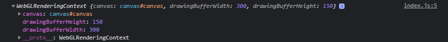
const stream = canvas.captureStream(25); // 25 FPS
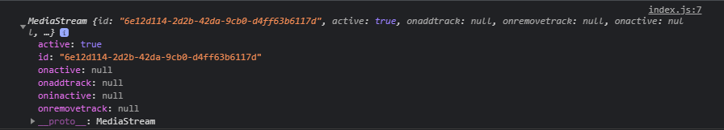
const tracks = stream.getTracks();
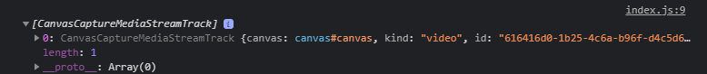
OffScreenCanvas
const offscreen = canvas.transferControlToOffscreen();
const worker = new Worker("offscreencanvas.js");
worker.postMessage({canvas: offscreen}, [offscreen]);
const ctx = canvas.getContext('bitmaprenderer');
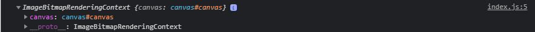
const ctx = canvas.getContext('bitmaprenderer');
const offscreen = new OffscreenCanvas(256, 256);
const gl = offscreen.getContext('webgl');
// ... some drawing for the HTML canvas using the gl context ...
const bitmap = offscreen.transferToImageBitmap();
canvas.transferFromImageBitmap(bitmap);
Optimizing canvas
- Pre-render similar primitives or repeating objects on an offscreen canvas
- Avoid floating-point coordinates and use integers instead
- Don’t scale images in drawImage
- Use multiple layered canvases for complex scenes
- Use plain CSS for large background images
- Scaling canvas using CSS transforms
- Turn off transparency